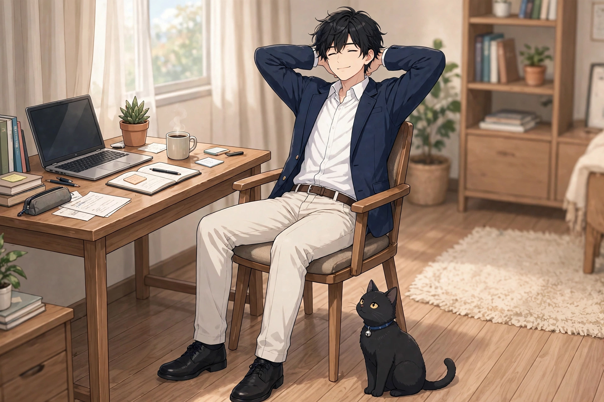
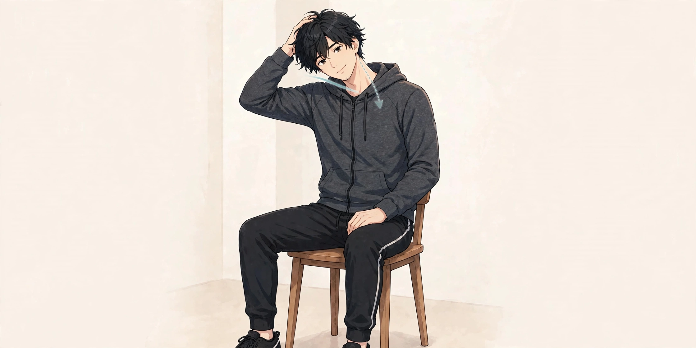
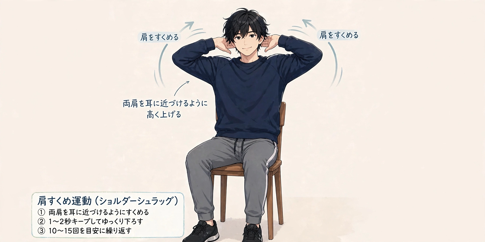

TRAINING — BODY & POSTURENo.6
首・肩のこわばりをリセット｜デスクワーク後の3分ケア（メンズ）
TEXT — 222工房（セラピスト／パーソナルトレーナー） GUIDE — ケント＆ノクス

始める前に：痛み・しびれがある場合は行わないでください。途中で痛みが出たら中止し、気になる症状が続く場合は医療機関に相談してください。回数や秒数は目安で、無理のない範囲から始めてください。
ケント：夕方になると首と肩が重い人は、椅子に座ったままできるケアからどうぞ。所要は約3分です。
やり方1：首の側屈ストレッチ（左右各20秒）
- 椅子に座り、背筋を伸ばします
- 頭を横に倒し、手は重みを添えるだけにします（図1）
- 反対側の肩が上がらないように意識します

やり方2：肩のすくめ＆リリース（5回）
肩を耳へ近づけて3秒保ち、息を吐いてストンと落とします（図2）。力の抜け感を覚える練習です。

服の見え方との関係
肩が上がったままだと、シャツの襟元が詰まって見えます。服側の見直しは40代メンズ 清潔感シャツの選び方にまとめています。
SHOPPING今回の用品
この記事のテーマに合う用品


あわせて読みたい：トレーニング用品一覧／巻き肩・猫背対策
NEXT — 次に読む二の腕引き締め｜壁プッシュとタオル絞り（女性）